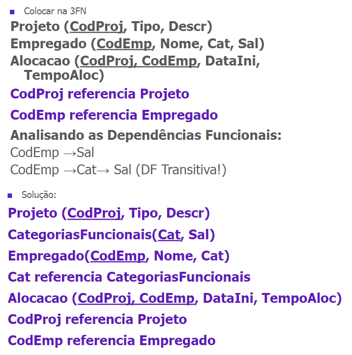

Primeira forma normal (1FN)
Uma relação está na primeira forma normal se todos os seus atributos são monovalorados, simples e não possui relações aninhadas.
- Monovalorados: Cada atributo em uma tabela contém apenas um único valor.
- Simples: Os atributos são simples quando não são compostos por subatributos, ou seja, não são divididos em partes menores e contêm informações independentes.
- Aninhadas: A ausência de relações aninhadas significa que uma tabela não contém outras tabelas dentro dela. Não há estruturas de dados complexas, como tabelas dentro de tabelas, dentro da relação principal.
Segunda forma normal (2FN)
Uma relação está na segunda forma normal quando duas condições são
satisfeitas:
- A relação estiver na primeira forma normal
- Todos os atributos da relação que não for chave primária dependem funcionalmente de toda a chave primária (Não pode haver depêndencia parcial)
Terceira forma normal (3FN)
Uma relação está na terceira forma normal quando duas condições são
satisfeitas:
- A relação estiver na segunda forma normal
- Não existem atributos não chave que sejam dependentes de outros atributos não chave (atributos não chave devem depender exclusivamente de atributos chave)
